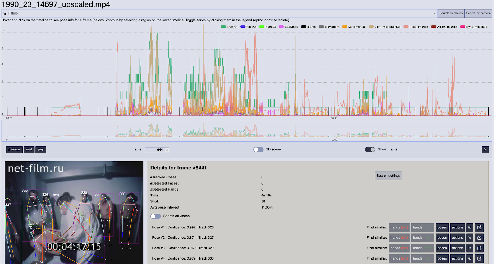
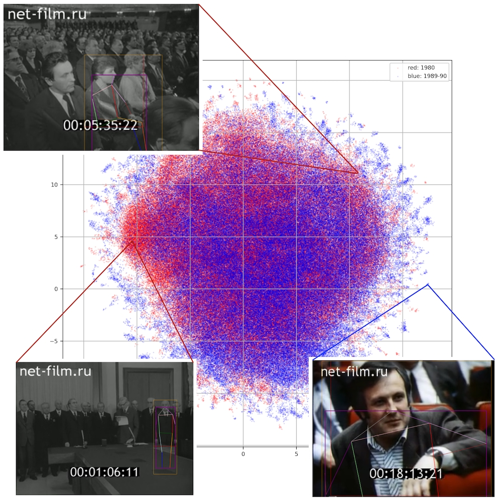
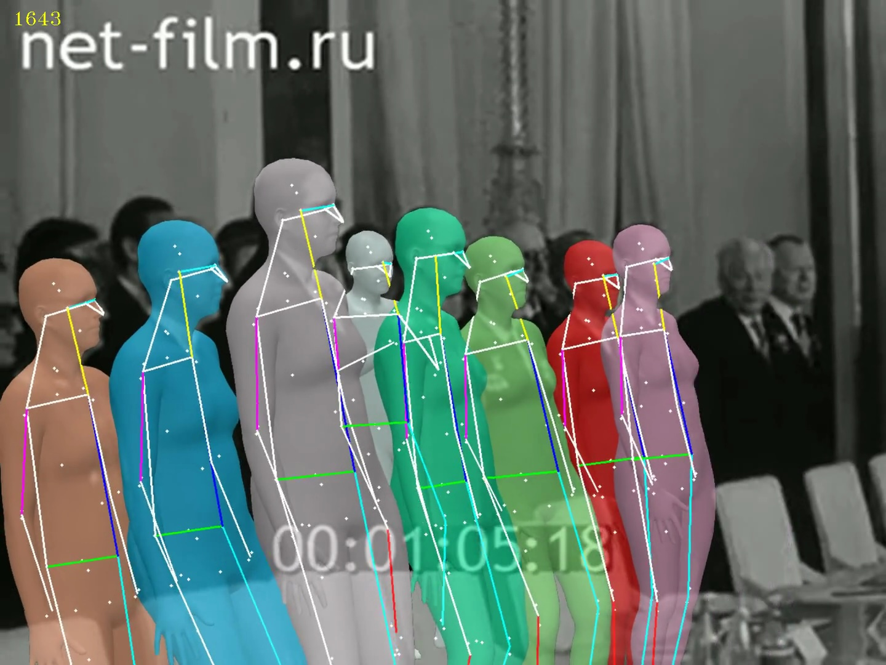
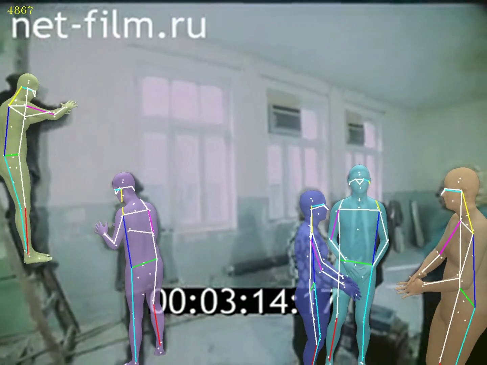

In the Soviet Union, perestroika was a period of political reforms launched in the mid-1980s with Mikhail Gorbachev's call for public openness, glasnost. This had a seismic impact on Soviet media contents (McNair 2006). Previous studies have applied visual similarity analyses based on convolutional features of sampled frames to expose how the appearance of Soviet newsreels changed radically in the mid-1980s. A hypothesis is that one of the reasons for the radical shift in visual representation was due to changing portrayals of people, as the newsreels ceased to represent heroes of socialist work and began to portray people in ways that highlighted ecological, economic, and political difficulties that were beginning to be covered in the media (Oiva et al. 2024). This hypothesis has so far not been verified. The aim of this project is to explore whether there was a distinguishable change in the postures and gestures of individuals depicted in the Novosti dnya newsreel series in the 1980s.



@incollection{perestroika-poses,
title = {Poses and Movement as Visual Manifestations of Perestroika in Soviet Newsreels, 1980 to 1990},
author = {Peter Broadwell and Mila Oiva},
year = {forthcoming},
booktitle = {Computational Humanities Research 2027},
publisher = {Anthology of Computers and the Humanities},
pages = {},
editor = {},
doi = {}
}